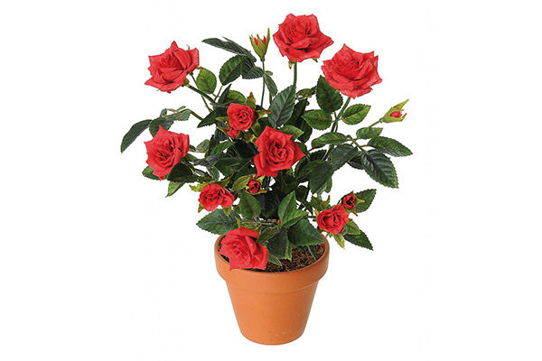

رز قرمز
رُز، گل سرخ، گل محمدی، گل سوری، یا وَرد، سردهای (ردهای) از تیرهٔ گلسرخ است که نزدیک به ۱۵۰ گونه دارد. جای اصلی رویش رز خودرو در نیمکرهٔ شمالی کرهٔ زمین است و تاکنون در نیمکرهٔ جنوبی رز خودرو دیده نشدهاست. گل رز در بسیاری از بخشهای ایران به خوبی میروید همچنین در اکثر بخشهای خاورمیانه، اروپا و روسیه نیز به فراوانی یافت میشود. این گیاه برای مصارف صنعتی بیشتر در کشورهای بلغارستان، ترکیه و فرانسه کشت میشود. در سال ۱۹۷۹ پژوهشگران در انجمن جهانی رز توافق کردند تا رزها در سه گروهِ رزهای خودرو، رزهای باغی قدیمی و رزهای باغی جدید قرار گیرند همچنین رزهای انگلیسی نیز به مجموعهای از گلهای رز باغی قدیم و جدید گفته میشود که توسط پرورش دهندهٔ رز انگلیسی، دیوید اوستین بوجود آمدهاند. تاکنون بیش از ۲۰٬۰۰۰ رقم رز نامگذاری شدهاست و هر ساله صدها نوع جدید نیز به این مجموعه افزوده میشود. رز به عنوان ملکهٔ گلها آوازه دارد. پرورش رز تنها برای لذت بردن از زیبایی این گل نیست بلکه از این گل برای عطرسازی، فرآوری چای، مربا، لیکور و بسیاری مواد خوراکی دیگر استفاده میشود. عطر رز آرامش بخش سامانه عصبی است و در راحت به خواب رفتن انسان کارایی دارد و به همین سبب در عطردرمانی بکار برده میشود. اسانس رز گرانترین اسانس دنیا است و هر گرم آن معادل یک گرم طلا در بازار جهانی قیمت دارد. گل رز از نظر کثرت قرار گرفتن در جایگاه گل ملی مقام نخست را در میان همه گلها دارد و در ۱۰ کشورِ ایران، آمریکا، انگلستان، ایتالیا، رومانی، عراق، عربستان سعودی، مراکش، لوکزامبورگ و بلغارستان به عنوان گل ملی انتخاب شدهاست.
نحوه تکثیر و کاشت گیاه رز در گلدان
گل رز با استفاده از قلمه رز کاشته می شود. به این منظور یک قلمه با شش مجموعه برگ به صورت زاویهدار را از بوته گل رز قطع کنید.
برگ پایینی را از ساقه جدا کنید و بعد انتهای ساقه را که به صورت زاویهدار قطع شده است را به هورمون ریشهزایی آغشته کنید، سپس قلمه را در خاک گلدان بکارید و برای حفظ رطوبت بهتر است گلدان را با یک پوشش پلاستیکی بپوشانید.
قلمه های رز حدود دو ماه طول می کشد تا ریشه بزند. از آنجا که بیشتر ارقام رز در گلدان به خوبی عمل نکرده و بایستی آنها را در زمین کاشت، توصیه میشود برای کاشت رز در گلدان و پرورش آن در اپارتمان، از ارقامی مانند گل رز مینیاتوری استفاده کنید که در گلدان به خوبی رشد میکنند.

نور
رز به نور فراوان نیاز داشته، به شدت نور پسند است، لذا محیط پرورش این گل باید آفتابگیر باشد.
آبیاری
این گل، برای رشد خوب نیاز به رطوبت کافی و آب فراوان میباشد، آبیاری باید اول صبح و به صورت عمیق انجام گردد.
خاک مناسب
به خاک حاصلخیز، عمیق با زهکشی مناسب نیاز دارد. اضافه نمودن مواد آلی و پوشاندن سطح خاک از مواد آلی جهت حاصلخیزی بیشتر و حفظ رطوبت در سطح خاک بسیار مناسب است. بهترین خاک برای گل رز خاکی با ترکیب خاک باغچه + ماسه شسته شده +کود حیوانی (فقط جهت اصلاح خاک) و یا ورمیکمپوست + ماسه + خاک باغچه است.
دما
بهترین دما برای این گل دمای بین 20 تا 25 درجه سانتی گراد میباشد.
آفات و بیماری ها
مهمترین افت رز، شته گل سرخ میباشد. البته بیماری های دیگری نظیر سفیدک، کپک خاکستری و ...نیز این گیاه زیبا را تهدید میکند.